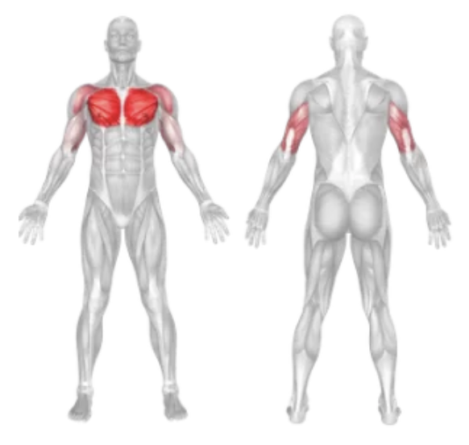
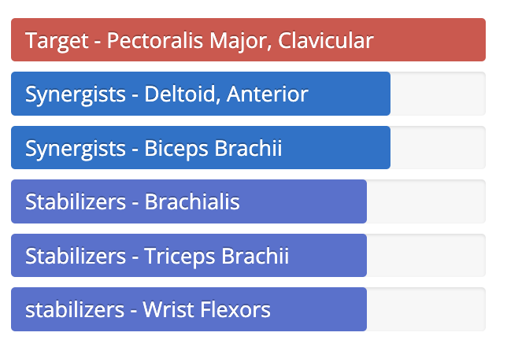

Setup
- Set an incline bench to about 30–45 degrees and lie back with a dumbbell in each hand.
- Hold the dumbbells above your chest with a slight bend in your elbows, palms facing each other.
- Engage your core and keep your feet flat on the floor for stability.
Execution
- Lower: Slowly open your arms wide in a controlled arc until you feel a stretch across your chest.
- Lift: Bring the dumbbells back up to the starting position, focusing on using your chest muscles.
- Maintain the slight bend in your elbows throughout the movement.
Tips for Effectiveness
- Mind-Muscle Connection: Focus on squeezing your chest at the top of the movement.
- Control: Avoid letting the dumbbells drop too low or using momentum.
- Range of Motion: Keep the motion wide and open, but stop if you feel shoulder discomfort.
Benefits of Incline Dumbbell Fly
- Upper Chest Emphasis: Targets the upper portion of the pectoral muscles.
- Improved Flexibility: Helps improve the range of motion and stretch of the chest.
- Isolation: Great for isolating the chest with minimal triceps or shoulder involvement.
Muscles Worked in Incline Dumbbell Fly


Do you want to change the language of this page?